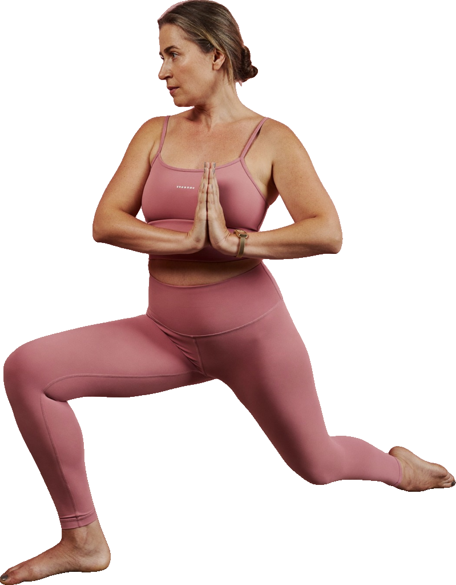

Vuelve
a sentirte tú.

Dentro encontrarás
Guía integral de 38 páginas
Recetario para la menopausia
Plan de 30 días de energía
Guía de vitaminas y suplementos
Diario de síntomas y progreso
Yoga en calma
Aromaterapia en la menopausia
App + plantillas editables
Con fuentes, sin mitos
Menopausia
equilibrada
menopausia-equilibrada.vercel.app
Esta guía informa y acompaña; no sustituye la consulta con un profesional de salud. Las imágenes son ilustraciones generadas con IA. Edición 2026.